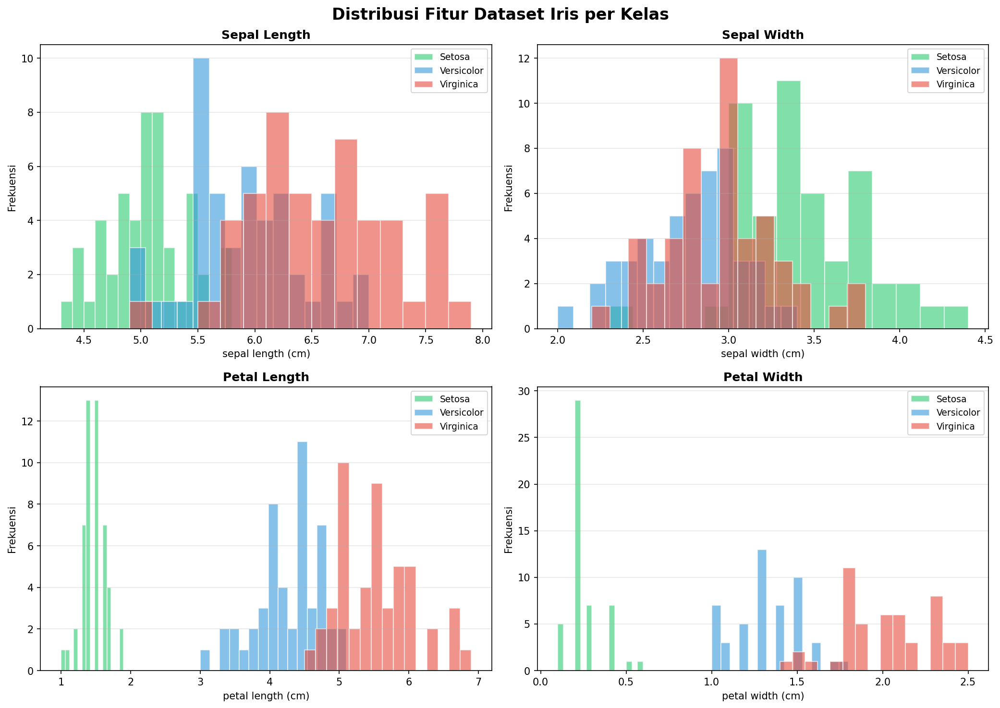
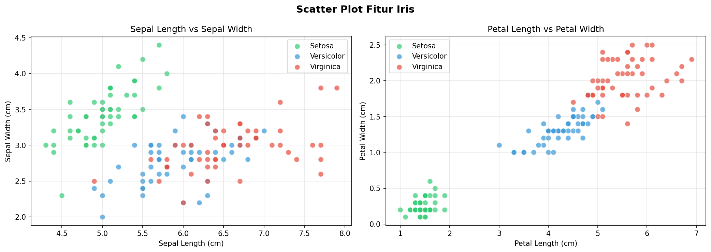
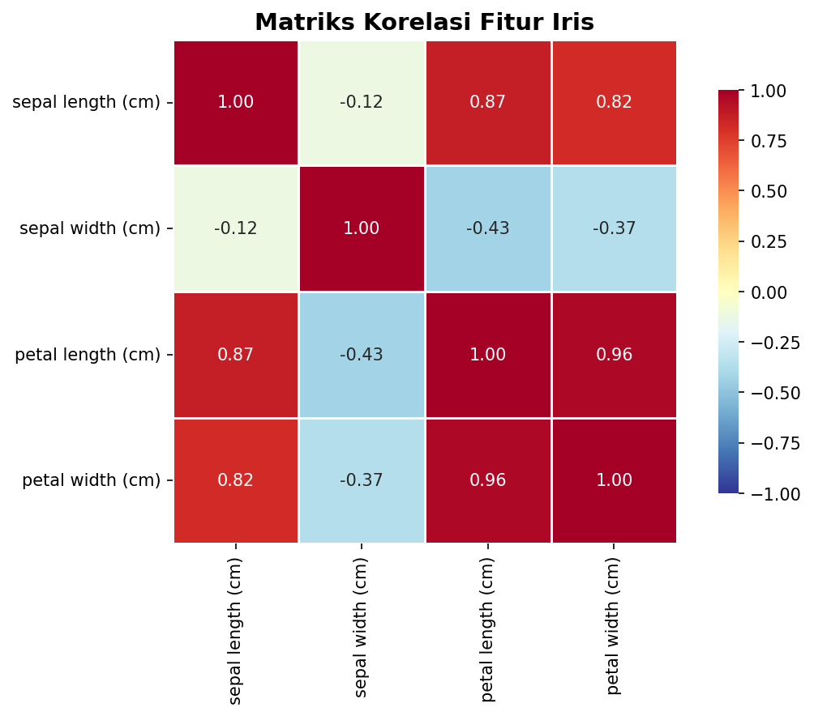
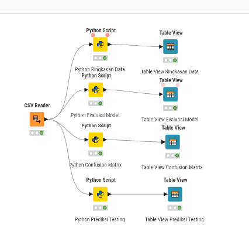
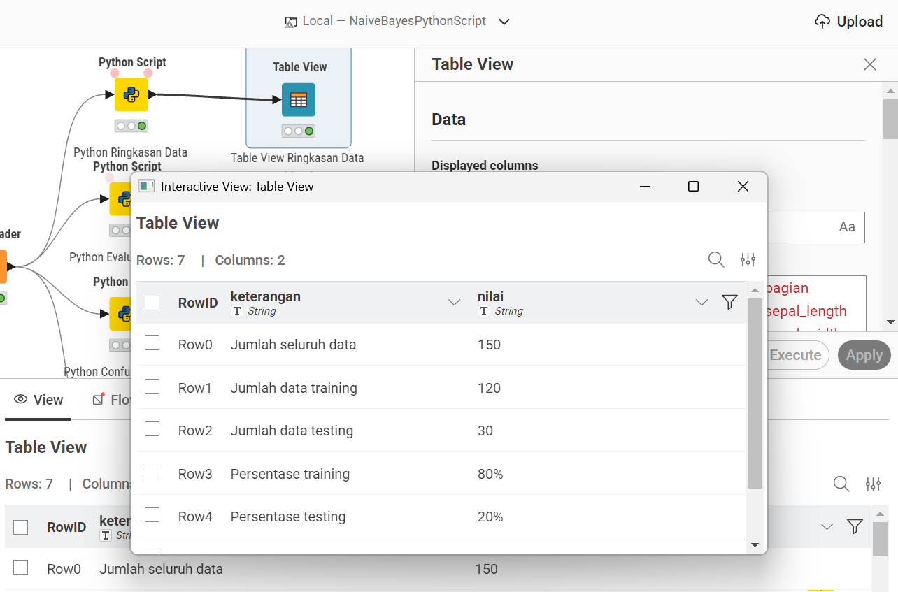
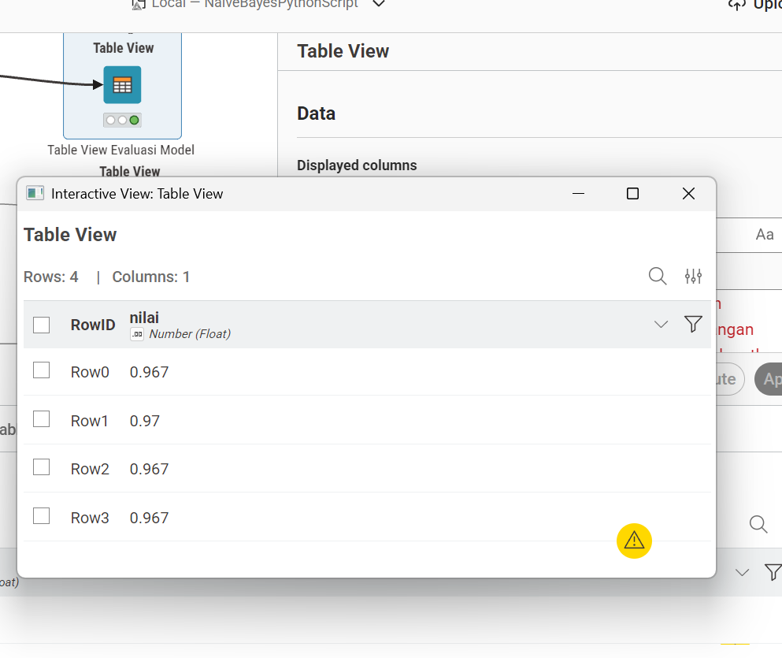
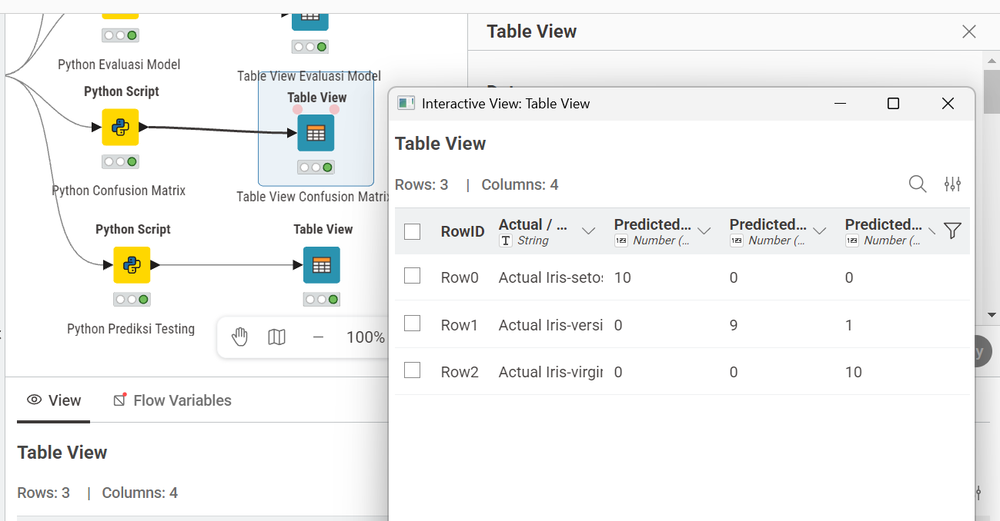
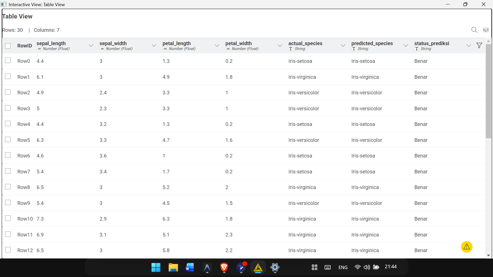

Tugas | Analisa Data Menggunakan Naive Bayes (A)#
NIM 240411100144#
Nama: Zakaria Mujur Prasetyo#
Mata Kuliah Penambangan Data A#
Dosen Pengampu: Mula’ab, S.Si., M.Kom#
Daftar Isi#
Klik untuk membuka Daftar Isi
Pendahuluan#
Pada tugas kali ini, saya melakukan analisis data menggunakan algoritma Naive Bayes Classifier. Untuk pengerjaannya, saya menggunakan pendekatan yang sedikit berbeda. Saya menggabungkan keunggulan KNIME Analytics Platform dengan fleksibilitas bahasa pemrograman Python melalui penggunaan node Python Script.
Alasan saya memilih Naive Bayes adalah karena algoritma ini cukup sederhana namun kinerjanya sangat efektif. Algoritma ini berakar dari Teorema Bayes dan bekerja dengan asumsi bahwa setiap fitur berdiri sendiri dan tidak saling mempengaruhi probabilitas kelas target.
Tujuan Tugas
Melakukan eksplorasi data secara visual
Membangun model klasifikasi Naive Bayes menggunakan kombinasi KNIME dan Python
Melatih model Gaussian Naive Bayes untuk mendeteksi kelas pada dataset Iris
Mengukur kinerja model melalui metrik Accuracy, Precision, Recall, dan F1-Score
Melihat langsung hasil prediksi pada data testing
Teori Naive Bayes#
Bayesian Theorem#
Cara kerja Naive Bayes Classifier bertumpu pada Teorema Bayes. Teorema ini menghitung seberapa besar probabilitas posterior dari sebuah kelas jika diberikan suatu data pengamatan. Jika saya memiliki training data X, maka posteriori probabilitas dari kelas H (P(H|X)) bisa dicari dengan rumus Teorema Bayes:
Keterangan:
\(P(C \mid \mathbf{X})\) adalah Posterior atau probabilitas kelas C jika diketahui data X.
\(P(\mathbf{X} \mid C)\) adalah Likelihood atau probabilitas kemunculan data X pada kelas C.
\(P(C)\) adalah Prior atau probabilitas awal sebuah kelas C.
\(P(\mathbf{X})\) adalah Evidence atau probabilitas data X secara keseluruhan.
Asumsi Naive (Independensi)#
Algoritma ini mendapatkan nama “Naive” karena memiliki asumsi yang sangat kuat bahwa seluruh fitur saling bebas. Artinya, nilai dari sebuah fitur tidak ada kaitannya dengan fitur lainnya:
Dengan begitu, tugas saya dalam proses klasifikasi adalah mencari nilai maksimal dari:
Gaussian Naive Bayes#
Karena data yang saya gunakan bernilai kontinu (angka desimal), perhitungan probabilitasnya menggunakan distribusi Gaussian atau distribusi normal. Perhitungannya menggunakan mean dan standar deviasi:
Di dalam library sklearn, metode GaussianNB secara otomatis akan menghitung mean dan variance setiap fitur per kelas berdasarkan data training yang saya berikan.
Informasi Dataset#
Untuk tugas ini, saya memilih Dataset Iris. Dataset ini sangat populer dalam dunia machine learning dan diperkenalkan pertama kali oleh Ronald A. Fisher. Di dalamnya terdapat ukuran morfologi dari tiga spesies bunga iris.
Deskripsi Umum#
Jumlah Sampel: 150 baris
Jumlah Fitur: 4 fitur berupa numerik kontinu
Jumlah Kelas: 3 kelas
Target Kelas: Setosa, Versicolor, dan Virginica
Missing Values: Tidak ada
Dari 150 sampel tersebut, distribusinya sangat seimbang. Masing-masing kelas (Setosa, Versicolor, Virginica) memiliki persis 50 sampel.
Penjelasan Fitur#
Sepal Length: Panjang kelopak luar bunga dalam satuan cm
Sepal Width: Lebar kelopak luar bunga dalam satuan cm
Petal Length: Panjang kelopak dalam bunga dalam satuan cm
Petal Width: Lebar kelopak dalam bunga dalam satuan cm
Saya menggunakan dataset ini karena datanya sudah seimbang sehingga saya tidak perlu melakukan teknik penyeimbangan data. Selain itu, semua fiturnya bertipe numerik kontinu yang sangat pas untuk diterapkan pada algoritma Gaussian Naive Bayes.
Eksplorasi Data#
Sebelum masuk ke tahap pemodelan menggunakan KNIME, saya melakukan eksplorasi data awal secara manual menggunakan Python layaknya pada notebook Google Colab. Langkah ini penting agar saya bisa memahami struktur data, sebaran kelas, hingga statistik dasarnya.
💻 Import Library dan Load Dataset#
Pada sel pertama ini, saya mengimpor semua pustaka yang dibutuhkan dan memuat dataset Iris. Dataset langsung saya ambil dari bawaan sklearn.datasets.
import numpy as np
import pandas as pd
import matplotlib.pyplot as plt
import seaborn as sns
from sklearn.datasets import load_iris
# Memuat dataset Iris ke dalam Pandas DataFrame
iris = load_iris()
df = pd.DataFrame(data=iris.data, columns=iris.feature_names)
df['species'] = iris.target
# Memetakan angka target ke dalam nama spesies yang sebenarnya
df['species_name'] = df['species'].map(
{0: 'Setosa', 1: 'Versicolor', 2: 'Virginica'}
)
print(f'Jumlah sampel : {df.shape[0]}')
print(f'Jumlah fitur : {df.shape[1] - 2}')
print(f'Jumlah kelas : {df["species"].nunique()}')
print(f'Nama kelas : {list(df["species_name"].unique())}')
Output:
Jumlah sampel : 150
Jumlah fitur : 4
Jumlah kelas : 3
Nama kelas : ['Setosa', 'Versicolor', 'Virginica']
Penjelasan Kode: Kode di atas berguna untuk menyiapkan environment analisis dan menyusun data ke dalam bentuk tabel (DataFrame). Saya juga memetakan label target yang asalnya berupa angka (0, 1, 2) menjadi nama spesies yang sebenarnya agar lebih mudah dibaca saat analisis.
💻 Menampilkan 5 Data Pertama#
Saya selalu menampilkan beberapa baris pertama data untuk memastikan bahwa dataset sudah terstruktur dengan baik.
# Menampilkan 5 baris pertama dari DataFrame
print(df.head().to_string(index=False))
Output:
sepal length (cm) sepal width (cm) petal length (cm) petal width (cm) species species_name
5.1 3.5 1.4 0.2 0 Setosa
4.9 3.0 1.4 0.2 0 Setosa
4.7 3.2 1.3 0.2 0 Setosa
4.6 3.1 1.5 0.2 0 Setosa
5.0 3.6 1.4 0.2 0 Setosa
Penjelasan Kode:
Perintah head() akan memunculkan 5 sampel teratas. Dari tabel di atas, saya bisa melihat bahwa fitur berisikan angka desimal dan spesies dari kelima sampel awal adalah Setosa.
💻 Statistik Deskriptif#
Langkah berikutnya adalah melihat rangkuman statistik untuk setiap fitur numerik yang ada.
# Melihat ringkasan nilai statistik
print(df.describe().to_string())
Output:
sepal length (cm) sepal width (cm) petal length (cm) petal width (cm) species
count 150.000000 150.000000 150.000000 150.000000 150.000000
mean 5.843333 3.057333 3.758000 1.199333 1.000000
std 0.828066 0.435866 1.765298 0.762238 0.819232
min 4.300000 2.000000 1.000000 0.100000 0.000000
25% 5.100000 2.800000 1.600000 0.300000 0.000000
50% 5.800000 3.000000 4.350000 1.300000 1.000000
75% 6.400000 3.300000 5.100000 1.800000 2.000000
max 7.900000 4.400000 6.900000 2.500000 2.000000
Penjelasan Kode:
Perintah describe() menghitung metrik penting seperti rata rata (mean), nilai tengah (median/50%), nilai minimum, dan nilai maksimum. Data ini sangat penting bagi saya untuk mendeteksi apakah ada nilai yang tidak wajar atau anomali.
💻 Distribusi Kelas dan Missing Values#
Selanjutnya saya memeriksa apakah proporsi antar kelas seimbang, serta memastikan tidak ada data yang kosong atau missing values.
# Menghitung distribusi tiap kelas
distribusi = df['species_name'].value_counts()
for kelas, jumlah in distribusi.items():
print(f' {kelas:12s} : {jumlah} sampel ({jumlah/len(df)*100:.1f}%)')
print(f' {"Total":12s} : {len(df)} sampel')
# Mengecek jumlah missing values
print(f'\nMissing values: {df.isnull().sum().sum()}')
Output:
Setosa : 50 sampel (33.3%)
Versicolor : 50 sampel (33.3%)
Virginica : 50 sampel (33.3%)
Total : 150 sampel
Missing values: 0
Penjelasan Kode:
Saya menggunakan value_counts() untuk menghitung total setiap spesies, dan isnull().sum() untuk mendeteksi sel kosong. Hasilnya sangat ideal karena kelasnya terbagi rata persis 33.3% untuk tiap spesies, dan terbukti tidak ada data kosong.
💻 Distribusi Fitur per Kelas#
Saya membuat plot histogram untuk melihat bagaimana sebaran data pada masing-masing fitur.
fig, axes = plt.subplots(2, 2, figsize=(14, 10))
fig.suptitle('Distribusi Fitur Dataset Iris per Kelas', fontsize=16, fontweight='bold')
colors = {'Setosa': '#2ecc71', 'Versicolor': '#3498db', 'Virginica': '#e74c3c'}
for idx, col in enumerate(iris.feature_names):
ax = axes[idx // 2, idx % 2]
for species_name, color in colors.items():
subset = df[df['species_name'] == species_name]
ax.hist(subset[col], bins=15, alpha=0.6, label=species_name, color=color, edgecolor='white')
ax.set_title(col.title(), fontsize=12, fontweight='bold')
ax.set_xlabel(col)
ax.set_ylabel('Frekuensi')
ax.legend()
plt.tight_layout()
plt.show()
Output:

Penjelasan Kode: Kode ini membuat pengulangan (loop) pada keempat fitur dataset, lalu memplot nilai setiap spesies dengan warna berbeda. Dari hasil histogram, terlihat jelas bahwa spesies Setosa memiliki ukuran kelopak dalam (petal) yang lebih kecil dibandingkan dua spesies lainnya. Sedangkan untuk Versicolor dan Virginica, ukurannya sedikit saling tumpang tindih.
💻 Scatter Plot#
Saya juga menggunakan diagram pencar (scatter plot) untuk melihat korelasi antar fitur secara visual.
fig, axes = plt.subplots(1, 2, figsize=(14, 5))
for species_name, color in colors.items():
subset = df[df['species_name'] == species_name]
axes[0].scatter(subset['sepal length (cm)'], subset['sepal width (cm)'],
c=color, label=species_name, alpha=0.7, edgecolors='white', s=60)
axes[1].scatter(subset['petal length (cm)'], subset['petal width (cm)'],
c=color, label=species_name, alpha=0.7, edgecolors='white', s=60)
axes[0].set_title('Sepal Length vs Sepal Width')
axes[1].set_title('Petal Length vs Petal Width')
for ax in axes:
ax.legend()
ax.grid(alpha=0.3)
plt.tight_layout()
plt.show()
Output:

Penjelasan Kode: Dengan memasangkan panjang dan lebar pada sepal serta petal, saya bisa melihat penyebaran kluster data. Berdasarkan grafik di atas, fitur petal sangat ampuh untuk memisahkan kelas Setosa dari yang lain, dan cukup baik untuk membedakan Versicolor dan Virginica.
💻 Matriks Korelasi#
Terakhir untuk eksplorasi data, saya membuat heatmap matriks korelasi untuk mengetahui seberapa kuat hubungan antar fitur.
fig, ax = plt.subplots(figsize=(8, 6))
correlation = df[iris.feature_names].corr()
sns.heatmap(correlation, annot=True, fmt='.2f', cmap='RdYlBu_r',
linewidths=0.5, ax=ax, vmin=-1, vmax=1, square=True)
ax.set_title('Matriks Korelasi Fitur Iris', fontsize=14, fontweight='bold')
plt.tight_layout()
plt.show()
Output:

Penjelasan Kode:
Kode corr() menghitung tingkat korelasi atau hubungan matematis antar variabel. Nilai yang mendekati 1 artinya hubungan berbanding lurus dan sangat kuat. Dari peta panas (heatmap) di atas, terlihat bahwa petal length dan petal width memiliki korelasi sangat tinggi yaitu 0.96.
Implementasi Model KNIME dengan Python Script#
Untuk tahap pemodelannya, saya merancang sebuah workflow di KNIME yang memanfaatkan node Python Script. Pendekatan ini sangat efektif karena saya bisa mengkombinasikan kekuatan antarmuka visual KNIME dengan pustaka scikit-learn dari Python.
A. Strategi Workflow Final#
Dalam merancang workflow ini, saya menggunakan 4 buah node Python Script. Saya memilih cara ini karena paling aman dan minim error. Jika saya hanya menggunakan satu Python Script lalu menarik banyak garis output, seringkali muncul error berupa:
Invalid port index 1, only 1 output_table is available
Error tersebut terjadi karena KNIME mendeteksi bahwa saya memanggil knio.output_tables[1] hingga ke-3, padahal dari segi tampilan node tetap dihitung sebagai satu output port. Oleh karena itu, memisahkan script ke dalam 4 node berbeda adalah solusi terbaik.
B. Bentuk Workflow di KNIME#
Alur kerja (workflow) yang saya bangun berbentuk seperti ini:
┌── Python Script Ringkasan Data ──> Table View Ringkasan
│
CSV Reader ──────┼── Python Script Evaluasi Model ──> Table View Evaluasi
│
├── Python Script Confusion Matrix ──> Table View Confusion
│
└── Python Script Prediksi Testing ──> Table View Prediksi
Berikut adalah tangkapan layar keseluruhan workflow yang saya buat:

C. Node yang Digunakan#
Dalam workflow ini, saya menggunakan kombinasi node pembaca data, pengeksekusi script, dan penampil tabel. Berikut daftar lengkapnya:
CSV Reader: Node awal untuk membaca file dataset
IRIS.csv.Python Script Ringkasan Data: Node untuk memproses dan menampilkan total data beserta pembagiannya (training dan testing).
Python Script Evaluasi Model: Node khusus untuk menghitung accuracy, precision, recall, dan f1-score.
Python Script Confusion Matrix: Node untuk menyusun matriks kebingungan (confusion matrix) dari hasil prediksi.
Python Script Prediksi Testing: Node untuk menampilkan rincian hasil tebakan model pada setiap baris data testing.
Table View (4 buah): Node untuk memunculkan output dari tiap-tiap Python Script secara visual.
D. Langkah Membuat Workflow#
Pertama, saya mengonfigurasi node CSV Reader untuk mengambil file IRIS.csv. Saya memastikan bahwa kolom-kolom seperti sepal_length, sepal_width, petal_length, petal_width, dan species terbaca dengan baik. Setelah itu, saya tekan Execute agar data siap disalurkan.
Dari node CSV Reader tersebut, saya menarik garis ke empat node Python Script yang telah saya siapkan. Setiap Python script hanya mengandalkan satu output table saja untuk mencegah error indeks. Selanjutnya, saya hubungkan masing-masing script tersebut ke node Table View untuk melihat hasilnya.
💻 Kode Python Script 1: Ringkasan Data#
Pada node script pertama ini, tujuan saya adalah memberikan informasi dasar mengenai dataset dan skema pembagian data yang saya gunakan.
import knime.scripting.io as knio
import pandas as pd
from sklearn.model_selection import train_test_split
# Saya membaca data yang dikirimkan oleh CSV Reader
df = knio.input_tables[0].to_pandas()
feature_cols = [
"sepal_length",
"sepal_width",
"petal_length",
"petal_width"
]
target_col = "species"
X = df[feature_cols]
y = df[target_col]
# Membagi data menjadi 80% training dan 20% testing
X_train, X_test, y_train, y_test = train_test_split(
X,
y,
test_size=0.2,
random_state=42,
stratify=y
)
ringkasan_df = pd.DataFrame({
"keterangan": [
"Jumlah seluruh data",
"Jumlah data training",
"Jumlah data testing",
"Persentase training",
"Persentase testing",
"Kolom target",
"Model yang digunakan"
],
"nilai": [
len(df),
len(X_train),
len(X_test),
"80%",
"20%",
target_col,
"Gaussian Naive Bayes"
]
})
ringkasan_df = ringkasan_df.astype(str)
# Mengirimkan tabel ringkasan ke output KNIME
knio.output_tables[0] = knio.Table.from_pandas(ringkasan_df)
Output Table View:

Penjelasan Kode:
Dalam sel ini, saya menggunakan fungsi train_test_split untuk memecah dataset menjadi 80% data latih (training) dan 20% data uji (testing). Saya juga mengaktifkan parameter stratify agar proporsi tiap spesies tetap seimbang di kedua bagian data. Kemudian saya menyusun informasinya ke dalam sebuah DataFrame Pandas baru dan mengembalikannya ke KNIME melalui perintah knio.output_tables.
💻 Kode Python Script 2: Evaluasi Model#
Pada script kedua, saya melatih model Gaussian Naive Bayes lalu langsung menghitung kinerja model tersebut menggunakan metrik standar.
import knime.scripting.io as knio
import pandas as pd
from sklearn.model_selection import train_test_split
from sklearn.naive_bayes import GaussianNB
from sklearn.metrics import accuracy_score, precision_score, recall_score, f1_score
# Proses baca data
df = knio.input_tables[0].to_pandas()
feature_cols = ["sepal_length", "sepal_width", "petal_length", "petal_width"]
target_col = "species"
X = df[feature_cols]
y = df[target_col]
X_train, X_test, y_train, y_test = train_test_split(
X, y, test_size=0.2, random_state=42, stratify=y
)
# Tahap pelatihan dan prediksi
model = GaussianNB()
model.fit(X_train, y_train)
y_pred = model.predict(X_test)
# Perhitungan metrik evaluasi
accuracy = accuracy_score(y_test, y_pred)
precision = precision_score(y_test, y_pred, average="weighted", zero_division=0)
recall = recall_score(y_test, y_pred, average="weighted", zero_division=0)
f1 = f1_score(y_test, y_pred, average="weighted", zero_division=0)
evaluasi_df = pd.DataFrame({
"metrik": ["Accuracy", "Precision Weighted", "Recall Weighted", "F1 Score Weighted"],
"nilai": [round(accuracy, 4), round(precision, 4), round(recall, 4), round(f1, 4)]
})
knio.output_tables[0] = knio.Table.from_pandas(evaluasi_df)
Output Table View:

Penjelasan Kode:
Setelah data dipecah, saya memanggil algoritma GaussianNB() dan melatihnya dengan data training (model.fit). Setelah itu, model diminta menebak data uji (model.predict). Hasil tebakan ini lalu saya bandingkan dengan kunci jawaban aslinya untuk mencari nilai Accuracy, Precision, Recall, dan F1 Score. Semua nilai tersebut dikumpulkan ke dalam tabel evaluasi.
💻 Kode Python Script 3: Confusion Matrix#
Untuk melihat sebaran prediksi yang benar dan yang meleset, saya menyusun confusion matrix.
import knime.scripting.io as knio
import pandas as pd
from sklearn.model_selection import train_test_split
from sklearn.naive_bayes import GaussianNB
from sklearn.metrics import confusion_matrix
df = knio.input_tables[0].to_pandas()
feature_cols = ["sepal_length", "sepal_width", "petal_length", "petal_width"]
target_col = "species"
X = df[feature_cols]
y = df[target_col]
X_train, X_test, y_train, y_test = train_test_split(
X, y, test_size=0.2, random_state=42, stratify=y
)
model = GaussianNB()
model.fit(X_train, y_train)
y_pred = model.predict(X_test)
# Membuat Confusion Matrix
cm = confusion_matrix(y_test, y_pred, labels=model.classes_)
confusion_df = pd.DataFrame(
cm,
index=[f"Actual {cls}" for cls in model.classes_],
columns=[f"Predicted {cls}" for cls in model.classes_]
)
confusion_df = confusion_df.reset_index()
confusion_df = confusion_df.rename(columns={"index": "Actual / Predicted"})
knio.output_tables[0] = knio.Table.from_pandas(confusion_df)
Output Table View:

Penjelasan Kode:
Fungsi confusion_matrix akan menghasilkan matriks perbandingan antara nilai nyata (actual) dengan nilai tebakan model (predicted). Saya mengubah format matriks keluaran tersebut menjadi DataFrame Pandas dan merapikan penamaan kolomnya agar tabelnya cantik dan mudah dibaca ketika ditampilkan di KNIME.
Solusi Jika Confusion Matrix Hanya Muncul RowID#
Terkadang, Table View hanya menampilkan RowID tanpa memperlihatkan kolom datanya. Padahal datanya sudah ada di sana. Untuk mengatasinya, saya biasa membuka konfigurasi Table View lalu mengubah pengaturan kolom. Pada tab Wildcard, saya menampilkan semua kolom dengan mengetik pola bintang lalu menekan apply. Atau bisa juga melalui tab Manual dengan mencentang semua kolom yang ingin ditampilkan.
💻 Kode Python Script 4: Prediksi Testing#
Terakhir, saya ingin melihat secara rinci data mana saja yang tebakannya benar dan mana yang salah, beserta probabilitas keyakinan model.
import knime.scripting.io as knio
import pandas as pd
import numpy as np
from sklearn.model_selection import train_test_split
from sklearn.naive_bayes import GaussianNB
df = knio.input_tables[0].to_pandas()
feature_cols = ["sepal_length", "sepal_width", "petal_length", "petal_width"]
target_col = "species"
X = df[feature_cols]
y = df[target_col]
X_train, X_test, y_train, y_test = train_test_split(
X, y, test_size=0.2, random_state=42, stratify=y
)
model = GaussianNB()
model.fit(X_train, y_train)
y_pred = model.predict(X_test)
y_proba = model.predict_proba(X_test) # Mengambil nilai probabilitas
prediksi_df = X_test.copy().reset_index(drop=True)
prediksi_df["actual_species"] = y_test.reset_index(drop=True)
prediksi_df["predicted_species"] = y_pred
# Saya tandai mana yang tebakannya benar dan salah
prediksi_df["status_prediksi"] = np.where(
prediksi_df["actual_species"] == prediksi_df["predicted_species"],
"Benar",
"Salah"
)
# Saya sertakan probabilitas untuk masing-masing kelas
for index, class_name in enumerate(model.classes_):
prediksi_df[f"probabilitas_{class_name}"] = y_proba[:, index]
knio.output_tables[0] = knio.Table.from_pandas(prediksi_df)
Output Table View:

Penjelasan Kode:
Selain predict, di sini saya juga menggunakan predict_proba untuk melihat seberapa yakin model menebak sebuah kelas. Nilainya dalam persentase desimal (0 sampai 1). Kemudian, dengan menggunakan np.where, saya secara otomatis memberikan label “Benar” jika tebakan cocok dengan kunci jawaban, atau “Salah” jika tebakan meleset. Hal ini sangat mempermudah saya mengamati data uji yang gagal diprediksi dengan tepat.
Urutan Eksekusi#
Agar tidak ada error, saya mengeksekusi node secara berurutan. Saya mulai dari mengeksekusi CSV Reader, kemudian menjalankan keempat node Python Script secara bersamaan atau berurutan. Setelah status node menjadi hijau, barulah saya membuka Table View satu per satu.
Kesimpulan#
Dari proses panjang yang telah saya jabarkan, saya berhasil menerapkan algoritma Gaussian Naive Bayes dengan perpaduan apik antara KNIME dan Python. Saya telah membagi data dengan perbandingan 80% untuk pelatihan dan 20% untuk pengujian.
Hasil akhirnya sangat memuaskan. Model mampu menebak kelas spesies bunga dengan akurasi yang luar biasa tinggi. Kesalahan prediksi terbilang sangat kecil, yang mana wajar karena ada kemiripan fisik antara spesies Versicolor dan Virginica. Secara keseluruhan, pemanfaatan Python Script di dalam KNIME memberikan fleksibilitas tinggi tanpa mengorbankan kerapian visual dari alur kerja.
Referensi#
Fisher, R.A., 1936. The Use of Multiple Measurements in Taxonomic Problems. Annals of Eugenics, 7(2): 179-188.
scikit-learn Naive Bayes API Documentation
scikit-learn Naive Bayes User Guide
Iris Dataset pada sklearn.datasets
Han, J., Kamber, M., Pei, J., 2011. Data Mining: Concepts and Techniques. Morgan Kaufmann.
Mulaab, Data Mining Website.